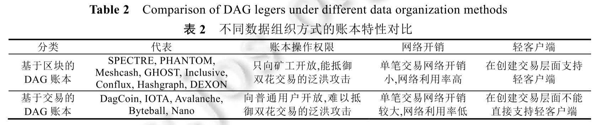

摘要
自2008年比特币出现以来，研究学者相继提出了多种分布式账本技术，其中，区块链是当前分布式账本最主要的实现形式之一。但当前区块链中存在一个核心问题：可扩展性瓶颈。具体而言,区块链的吞吐量严重不足,且其交易确认也较为缓慢,这些因素极大地限制了它的实际应用。在此背景下，基于DAG(有向无环图)的分布式账本因其具有高并发特性，有望突破传统区块链中的性能瓶颈，从而收到了学术界和产业界越来越多的关注和研究。在基于DAG的分布式账本中，最为核心和关键的技术是其共识机制，为此，对该关键技术进行了系统深入的研究。首次从共识形态出发将现有基于DAG的分布式账本分为以下 3 类:基于主干链的DAG账本;基于平行链的DAG账本;基于朴素 DAG 的账本。在此基础上,对不同类型的共识机制本质原理及特性进行了深入阐述,并从不同层面对它们进行了详细的对比分析.最后,指出基于DAG的共识机制研究中存在的问题与挑战,并给出进一步的研究方向。
前言
2008 年,中本聪提出了比特币[1],首次实现了在开放的 P2P 网络下不依赖于任何可信第三方的电子现金系统。比特币本质上是由多个参与方共同维护、通过全网共识和密码学机制来保护用户资金安全的分布式账本(distributed ledger)。与传统账本技术相比,分布式账本摆脱了对单一可信第三方的依赖,具有去中心化、不可篡改、可编程等特点,这使得它在数字支付、可信数据管理、信息安全、供应链等领域拥有广阔的应用前景,受到学术界与产业界的广泛关注。
作为比特币的核心技术,区块链是当前分布式账本最主要的实现方式之一。区块链技术提供了开放网络下新的信任模型,使得系统参与方能够在去中心化条件下达成信任。但同时,去中心化的代价之一是区块链的可扩展性瓶颈,最突出的表现是系统吞吐量不足。以比特币为例,当前系统最大交易的处理速率仅为 7 笔/s,并且每笔交易需要 6 个区块确认,即至少需要 1h。相比之下,主流支付工具,如 Visa,平均每秒能处理 2 000 笔交易,峰值处理能力为56 000笔/s,且能够实现单笔交易秒级确认。这种巨大的性能差异使得当前区块链不足以支持现代商业活动,限制了其大规模应用。
区块链的性能瓶颈主要是由其共识机制导致的。与传统账本中由一个中心化的机构来处理所有交易、用户无条件信任它的处理结果不同的是,区块链中需要全网节点对系统中的每一笔交易达成共识。在当前区块链的共识机制中,无论是工作量证明机制(proof of work,简称 PoW)还是权益证明机制(proof of stake,简称 PoS)等,本质上都是全网节点竞争记账权,每轮中成功获取记账权的节点以区块的形式确认交易。这种共识机制极大地限制了区块链系统的吞吐量。
直观上看,提升区块链系统的吞吐量最简单的方法是增加区块大小或降低区块的产生间隔,但Croman等人指出,只通过这些参数层面的调整不能从根本上解决这一问题,需要进行协议架构的重新设计。当前,提升区块链性能的主要方案有以下几类:(1) 链下支付技术,通过创建链下支付通道,使用户之间的小额高频支付在链下完成,从而间接地提高系统吞吐量;(2) Bitcoin-NG等协议,将比特币中记账权选举和交易验证及排序进行分拆,通过关键区块选举记账节点,在两轮记账权选举区间以多个微区块进行交易验证及排序,从而提高链上处理能力;(3) 分片技术,通过将全网节点划分为多个集合(shard),每个集合单独运行共识协议进行交易共识,从而提升系统吞吐量;(4) 基于有向无环图(directed acyclic graph,简称 DAG)的分布式账本技术,将账本形式从区块链的单链形态转变为有向无环图的形态,避免了单链中存在的串行化写入的限制,从而使得账本具有支持高并发的特性。
在上述方案中,由于 DAG 的高并发特性,使得基于 DAG 的分布式账本技术成为解决区块链可扩展性问题最具前景的研究方向,并得到了学术界和产业界越来越多的关注和重视.事实上,在以比特币为代表的区块链中,除创世区块外,每个区块有且只有一个前驱父区块和后继子区块,区块之间构成单链.如果两个区块被同时提议,将导致区块链出现分叉,根据最长链原则,最终只会保留一个区块在主链上,而另一个被丢弃.但在基于DAG的分布式账本中,每个账本的基本单元可以引用一至多个前驱单元,且可以被一个或多个后继单元同时引用.这种结构上的差别,使得针对区块链的账本操作只能够以串行化的方式进行(同时添加区块将导致冲突),而针对基于 DAG 的账本操作支持并发进行,多个节点可以同时向账本中新增交易或区块单元,从而极大地提高了系统吞吐量.
然而,当前还缺乏针对基于 DAG 的分布式账本技术系统化的研究,这将极大地影响对已有基于 DAG 的分布式账本技术可行性、安全性等方面的理解与分析评估,从而限制了相关领域进一步的研究工作与应用推广.为此,本文将对现有基于 DAG 的分布式账本中的核心技术——共识机制进行深入的研究和对比分析.首先,通过深入分析现有基于 DAG的分布式账本共识机制的本质思想与特点,我们将其分为以下 3 类:(1) 基于主干链的DAG共识协议;(2) 基于平行链的DAG共识协议;(3) 基于朴素DAG的共识协议.其次,我们分别从共识形态和数据组织方式两个层面对基于 DAG 的共识机制进行详细的分析和评估.最后,我们从安全性、可扩展性以及对智能合约支持等方面对现有方案进行对比和讨论,指出当前研究仍存在的问题,并提出进一步的研究方向.
本文第 1 节概述共识机制的发展以及区块链可扩展性问题的研究进展,并对基于 DAG 的分布式账本进行介绍.第 2 节对现有基于 DAG 的主流共识协议的本质原理与特性进行阐述.第 3 节从不同层面对基于 DAG 的共识机制特性进行对比分析.第 4 节指出现有基于 DAG的共识研究中仍存在的问题与挑战.第 5 节对全文进行总结,并对基于 DAG 的分布式账本未来的发展方向做出展望.
1.背景介绍
共识机制的发展经历了从传统的、准入环境下的分布式系统共识机制到适用于区块链的、开放的分布式系统共识机制的演变.近年来,基于 DAG 的分布式账本共识机制由于其高并发特性受到了极大关注.本节首先对经典共识机制进行概述,之后介绍区块链共识机制及其可扩展性研究,最后对基于DAG的分布式账本技术进行阐述.
1.1 经典共识机制
20 世纪 70 年代,随着分布式数据库和事务处理的兴起,分布式系统节点的一致性得到重视和研究.1978年,IBM实验室的Gray提出两阶段提交协议,用于保证分布式系统中多个节点之间事务处理的原子性.在此协议下,任一事务 T要么在所有节点提交,要么在所有节点终止,即保证一致性.但该协议在协调节点发生故障时会导致阻塞,为此,Skeen提出了三阶段提交协议,以解决特定情况下的阻塞问题.但是,这两个协议均不能很好地应对节点故障的异常情形.
为保证在多个节点故障的情况下系统节点仍能达成一致,产生了分布式系统共识算法的需求.具体共识机制的设计需要考虑两个重要因素:节点故障模型(failure model)和网络通信模型(communication model).节点故障模型分为两类:崩溃故障和拜占庭故障.崩溃故障下,节点服务进程停止响应,不再接收或转发消息;而拜占庭故障中,故障节点可以有任意行为,如不发送消息或向不同节点发送不同且错误的消息等.网络通信模型分为4 种:同步、弱同步、最终同步和完全异步网络.同步网络下,存在明确的时延上界$\triangle$,以保证消息能够在该时延内送达其他节点;弱同步网络下存在时延上界 ,$\triangle$但此 $\triangle$协议参与者未知;最终同步网络能够保证消息的最终可达性,但不存在时延上界 $\triangle$;完全异步网络不保证消息可达性.
针对节点崩溃故障,经典的共识算法为 Lamport 提出的 Paxos 算法,随后由它衍生出许多变种,以适应不同应用场景,如 Raft和 Zab.而针对节点拜占庭故障,最具代表性的研究是它在弱同步网络环境下的共识机制.1999年,Castro等人对 Paxos进行了改进,提出PBFT(practical Byzantine fault tolerance)协议,使其可以应对拜占庭故障.PBFT 协议运行于连续的视图(view)中,每个视图中对应一个主节点,负责对消息进行排序并广播给其他副本节点,它们之间通过三阶段协议进行共识.在这一过程中,如果主节点出现恶意行为或发生故障,副本节点会通过视图切换(view change)更换视图及其对应的主节点,以保证协议继续安全运行.PBFT 协议保证 1/3的容错性,即 n=3f+1,其中,n 为参与节点总数,f为拜占庭节点数量.
1.2 区块链共识机制与可扩展性
在经典共识机制中,节点有准入规则,往往由管理者决定哪些节点可以参与,并为所有参与节点建立身份.2008 年出现的比特币首次成功地在无准入设定、支持节点动态加入和退出的开放式网络环境下实现共识.
比特币中,节点通过 PoW 机制竞争记账权,成功获取记账权的节点以区块的形式对交易进行组织排序.然后,全网节点对该区块进行共识,并基于此开启新一轮记账权的争夺.比特币的 PoW 共识机制有效地抵御了女巫攻击和双花攻击.但是,由于 PoW机制需要消耗巨大的算力,后续出现了多种 Po-X 方案对其进行改进.如以 Ouroboros、Ouroboros Praos、Ouroboros Crypsinous、Snow white以及 PPoS为代表的基于PoS(proof of stake)的共识机制,根据参与共识的节点投入的权益多少(主要指系统代币)确定其成为验证者的概率,继而由其产生区块,以此避免 PoW 带来的过多能源消耗;以 PermaCoin和 SpaceMint为代表的基于PoC(proof of capacity)的共识机制,以参与节点投入的存储资源大小为依据,概率性地确定记账节点,从而充分利用闲置的硬盘空间,同时规避能源浪费.此外,Sawtooth和REM中引入了PoET(proof of elapsed time)机制,使用可信硬件进行记账权选举.
各种 Po-X 机制本质上与 PoW 一样,都是全网节点参与记账权竞争的方式.它们在经济环保方面更有优势,但并未改善比特币中存在的交易吞吐量低、系统可扩展性不足的问题.提升区块链性能,目前主流的方案有以下几种.
- 链下支付技术.以闪电网络和雷电网络为代表的链下支付技术,将用户之间的高频小额交易从链上转移到链下进行.用户间首先创建链下支付通道,随后通过该支付通道进行交易,完成资产的双向转移,只有当双方需要关闭该链下支付通道或者一方出现恶意行为(如利用旧的通道状态谋利)时,才需要通过链上交易取回通道资金或通过提交证据交易进行链上仲裁.链下支付技术间接地提高了整个系统的交易吞吐率.
- Bitcoin-NG等协议改进.与比特币相比,Bitcoin-NG 等协议将记账权的选举和交易确认分成两步进行.首先,节点通过 PoW 机制竞争记账权,该阶段产生包含记账节点信息的关键区块,基于与比特币相同的最长链原则保证安全性.此后,产生该关键区块的节点获得记账权,通过产生微区块来确认交易,直到下一个记账节点产生.该类协议本质上利用两个记账节点产生间隙,由每轮中的记账节点生产多个包含交易的微区块,进行交易确认,从而提高每轮共识中的交易确认数量.
- 分片技术.以 Elsatico、OmniLedger、RapidChain为代表的分片技术,借鉴传统分布式数据库中的分片思想,将全网的节点划分到多个集合,每个集合内通过运行 PBFT 或其他改进的 BFT(Byzantine fault
tolerance)协议进行共识,完成交易确认,从而使整个系统的吞吐量随着全网节点数量的增加而近似线性增长. - 基于 DAG 的账本技术.以 Hashgraph、IOTA、Byteball等为代表的基于 DAG 的账本技术,从账本形态上对区块链进行改造,利用有向无环图结构在支持并发操作上的优势,设计出基于 DAG 的分布式账本.
1.3 基于DAG的分布式账本
近年来,基于 DAG 的分布式账本技术被提了出来,并因其在可扩展性上的巨大优势而受到广泛关注.在介绍其特性以及基于 DAG 的共识机制之前,我们先从图论的角度对其加以描述.
一个有向图 G 包括一个点集 V,一个边集 E.每个点集中的元素在基于交易的 DAG 账本中对应一个交易,而在基于区块的DAG账本中对应一个区块(其中包含交易).边集中的每个元素(u,v)是一个二元组,表示u,v两点之间的偏序关系(称 u“引用”了 v).在不同的共识协议中,这种偏序关系可以有不同的含义,大多数情况下表示 u节点间接确认了 v 节点代表的内容.一个DAG 结构除了满足有向图性质外,还需要满足无环(acyclic)性质,即不存在u1，u2,…,ul满足$\forall$i$\in$[l-1],(ui,ui+1)$\in$E且(ul,u1)$\in$E.如图 1 所示.这种无环性使得DAG账本具有易增难删(append-only)、交易可定全序(total-orderable)的拓扑性质.
一般而言,基于 DAG 的账本对每个节点的出度和入度没有限制(个别账本对每个节点的出入度有一定要求,如 IOTA、Hashgraph 等),如图 1 所示,DAG 视图中的一个节点(即 DAG 账本中的交易单元或包含交易的区块单元)能够同时被多个新加入节点引用,从而在高并发场景下能够天然地支持账本的并发写入操作.此外,新加入的节点可以同时引用多个 DAG 视图中的端节点,以加速整个账本的收敛.而相对应地,在传统单链结构的区块链中,如果有多个区块同时产生并引用相同的前驱区块,则最终只有一个区块能够成为主链区块,其他将被废弃,这使得该类账本不能很好地应对高并发场景.概括而言,传统单链结构的区块链只能实现串行化的账本增加操作,而基于 DAG 的分布式账本因其图结构的天然优势,能够更好地支持各种实际场景下的高并发需求,具有更好的可扩展性.
区块链的串行化表现在:同一时刻两个不同的账本增加操作将导致冲突.以比特币为例,如果两个矿工同时提议区块,区块链将出现短暂分叉,产生竞态条件.根据最长链原则,最终只有一个区块会被保留在主链上,而另一个区块被抛弃——取决于网络中延伸哪个分叉的矿工群体最先产生下一个区块.这种串行化带来的直接危害有以下 3 个方面:(1) 每次出现冲突,必然有一个分叉最终失去竞争优势,其区块成为主链外的孤块.这不仅造成产生该区块的矿工算力上的浪费,也使得在竞态条件中选择该分叉的其他网络算力被浪费;(2) 利用区块链分叉,理性矿工可以进行自私挖矿以产生高于自己算力占比的额外收益,更严重地,这种自私挖矿行为会大幅度降低系统安全性;(3) 为了最大程度地避免这种串行化带来的冲突,增加区块大小或减小区块产生间隔这两种直接提升区块链交易吞吐量的方法都存在限制,大区块在网络传播中导致的时延以及高区块产生率都将导致冲突概率增加.总体而言,单链结构的区块链都将受制于由串行化冲突带来的可扩展性瓶颈.
而图的特性使得基于 DAG 的分布式账本规避了串行化带来的限制,无论是以区块为基本单元的 DAG 账本还是以交易为基本单元的 DAG 账本,都天然地支持并发操作.入度限制的取消使得在高负载网络下,每个新加入的节点都可以同时引用相同的节点而不必担心冲突;出度限制的取消使得每个新节点可以同时引用视图中多个端节点以加速DAG的收敛.因此,基于DAG的分布式账本在可扩展性上具有天然的优势.需要指出的是,这种对并发的支持与 DAG 账本中的交易确认策略有关.区块链中,区块所包含的交易一定是合法交易,双花等冲突交易不会出现在同一链上.而基于DAG的账本对可能的冲突交易采用乐观的包容策略,即对于并发产生的单元,只要其遵循基本协议规则,便可被包含进入账本,如果其中个别交易存在冲突,则将通过共识算法判定其合法性.这本质上是一种延后冲突解决策略,避免了区块链中因竞态条件冲突带来的网络算力资源浪费以及可扩展性限制.
2.基于DAG的共识机制发展现状
本节中,我们对基于 DAG 的分布式账本共识机制的本质原理与特性进行阐述.在系统研究的基础上,我们将现有基于DAG的共识机制分为以下 3类:(1) 基于主干链的DAG共识协议,首先在DAG中确定主链,进而确定交易全序;(2) 基于平行链的DAG共识协议,网络中各实体或实体集合分别维护一条链,链间通过相互引用构成平行链结构,实体间利用此引用关系进行共识;(3) 基于朴素 DAG 的共识协议,除基本引用规则外无特殊限制,在 DAG 拓扑结构中利用某种投票机制进行共识.我们在第 2.1 节~第 2.3 节分别进行详细的介绍.
2.1 基于主干链的DAG共识机制
在第 1.3节我们指出DAG具有可定全序的特性,其中一个重要的思路是首先在DAG拓扑中共识出一条主干链,随后基于此对 DAG 进行拓扑排序.GHOST、Inclusive Blockchain Protocol、Conflux和 Byteball是此类基于主干链的 DAG 共识协议的典型代表,账本形态如图 2 所示.
2.1.1 GHOST
2015 年,Sompolinsky 和 Zohar 提出了基于树形 DAG 的共识协议GHOST(greedy heaviest-observed-sub-tree),它针对传统区块链在高并发情况下存在的问题,利用树形 DAG 结构进行了一定的改进.
中本聪指出,当攻击者拥有50%以下算力时,双花交易成功(即主链被颠覆)的概率随时间的推移而呈指数下降.然而,这个分析建立在网络同步性良好、区块同步速率远大于区块产生间隔的前提下.如果区块的并发性提升,上述结论则未必成立.原因在于,如果因区块并发或网络同步原因导致诚实节点不能够及时收到其他节点产生的区块,而只能继续在较旧的区块上挖矿,这将导致同一区块之后出现多个诚实节点独立产生的若干个并发区块.此时,从全网的角度来看,多数诚实节点的算力被抵消或浪费(若干个并发区块中最终只有一个合法),使得在比特币最长链原则下,恶意敌手可以利用 50%以下的算力颠覆最长链,从而完成双花攻击.
针对这一问题,GHOST 采用“最大权重子树”原则来选取主链,以取代比特币中的最长链原则.具体而言,GHOST 将候选区块集合及其引用关系看作一棵树,记作 T=(V,E),它的目标是从 T中选择一条主链,作为最终主链.首先,对 T中每个区块 B,记其权重为 1,其子区块集合为 childrenT(B).GHOST 从创世区块开始,在 T中递归地向后选取主链区块.每一步中,记当前主链区块为 B,则主链上下一区块必然属于 childrenT(B),而具体选择哪一个,则是先计算以每个候选子区块为树根的子树权重大小,取权重最大者为下一个主链区块.如此不断递归,直至到达 T的端节点.
可以看出,GHOST考虑了并发情况下后继区块构成的子树的权重.在此基础上,GHOST证明,即使在出块速率较高的网络中,颠覆主链所需的恶意节点临界算力依旧为 50%.在 Kiayias、Kiffer 等人的进一步研究中,GHOST 的安全性得到了进一步严格的分析与证明.作为首个以区块为基本单元的树形 DAG 共识协议,GHOST对后续出现的 Inclusive Blockchain Protocol和 Conflux产生了重要影响.两者都继承了 GHOST 在 DAG 中选举主链的思想;但更进一步地,这两个协议将主链之外的其他区块也包含进最终的 DAG 账本中,从而更大程度地提高了账本的吞吐量和并发条件下的性能(见第 2.1.2 节和第 2.1.3 节).
2.1.2 Inclusive Blockchain Protocol
2015 年,Lewenbegr 等人提出 Inclusive Blockchain Protocol,该协议(为便于描述,下文用 Inclusive 协议指代)是对 GHOST 的进一步发展.GHOST 在树形 DAG 的基础上通过最大权重子树递归地选举主链,提高了系统在并发情况下的安全性.但与比特币一样,GHOST 账本不包含主链之外区块(孤块)中的交易.这一方面造成系统算力的浪费,另一方面,系统性能也不能随着系统节点(算力)的增加而呈线性提高.为此,Inclusive 协议对其进行了改进.
GHOST 协议下,每个区块只能引用一个父区块,账本呈树形结构,最终只有主链上的区块合法.而在Inclusive 协议中,每个区块可以同时引用若干个父区块(一般为区块产生时自己视图中的端区块),账本变为朴素的 DAG,并且,此 DAG 中的所有区块均被视为最终账本的一部分.而这同时带来一个问题,即并发产生的区块中可能包含重复或冲突的交易,并非所有区块中的所有交易都最终合法.对此,Inclusive协议首先在DAG中共识主链,然后根据主链和拓扑结构对所有区块排序.区块全序确定之后,根据交易所在区块的顺序,冲突交易中优先被区块包含的被判定合法,其他视为非法,最终,所有的合法交易构成账本交易集合.作为一个协议框架,Inclusive 协议在共识主链的过程中可以采用比特币的最长链原则也可以利用 GHOST 协议,并对其针对性加以讨论,具体排序算法也未详细展开,这在后来的 Conflux 中得到了进一步发展.
在 Inclusive 协议中,主链之外的区块也能获得挖矿及手续费奖励,这在很大程度上保护了网络中弱连接矿工的利益,避免了系统的中心化.但它同时也是一把双刃剑:即使双花攻击失败,攻击者也能获得奖励,双花攻击的代价因此减小.为应对这一问题,Inclusive 协议引入了奖励递减函数,非主链区块的奖励与它们被主链区块引用的速度有关,引用越“慢”,奖励越低(攻击者往往会隐藏双花攻击区块,导致它们更“慢”地被主链区块引用),这有效地遏制了攻击者从中谋取利益.另一个问题是,如果矿工在利益驱使下,均优先包含高手续费的交易,那么区块之间的交易重复率将大大增加,导致系统吞吐量并不能随着区块的增加而呈线性提高.对此,Lewenbegr 等人通过博弈分析证明:矿工在产生区块时会随机选取交易进行包含,以避免因冲突而带来的交易费的损失,从而使得自己的收益最大化.
2.1.3 Conflux
2018 年,Li 等人提出了 Conflux,它是 GHOST思想的延伸,并对Inclusive 协议做出改进.与 Inclusive 相同的是,Conflux 中每个区块可以引用若干个父区块,且最终账本由所有区块中的合法交易构成.不同的是,Conflux中对区块的引用进行了分类,明确了排序规则.
Conflux 中,每个区块有且只有一个父节点边(parent edge),代表一种投票关系,用于共识主链.除此之外,对其他所有前驱区块的引用均为引用边(reference edge),仅用于判定时间先后顺序.如果在 DAG 中去除引用边而只保留父节点边,DAG 将退化成一棵树,此时,Conflux 采用 GHOST 的最大权重子树原则递归地从这棵树中选举主链.主链确定后,利用主链区块将 DAG 划分为前后相继的轮次,分别对每轮内的所有区块运行拓扑排序算
法,最终构成整个 DAG 的区块全序,进而交易全序及冲突交易的合法性也被确定.与主链共识算法相对应地,每个节点在产生新区块时会用父节点边引用视图中的主链端区块(入度为 0 的区块),如同比特币中矿工延长最长链一样,起到主链投票的作用;而主链端区块之外的所有其他端区块,均采用引用边进行引用,以促使 DAG 收敛并用于拓扑排序.
Conflux 与 Inclusive 协议的账本均包含所有区块,区块利用率达到 100%.相比之下,如果增加区块大小或减小区块间隔,比特币和 GHOST 会因为主链分叉而导致大量区块成为无效的孤块,进而影响系统的稳定性并限制了吞吐量;而在 Conflux 和 Inclusive 中,因为最终账本由所有区块中的合法交易构成,使得系统吞吐量能够随着算力的增加而近似线性提高.
2.1.4 Byteball
与上述方案不同,Byteball是一种基于交易单元的 DAG 账本.Byteball 中没有区块,DAG 账本由用户发出的交易单元(unit)构成.每个用户在创建交易单元时,在激励机制的作用下会引用自己视图中的端节点为父节点,随后在对它支付与单元大小相对应的手续费并进行合法签名之后,该单元即可通过网络广播被其他节点收到,并添加进各自的 DAG 账本中.
Byteball 的共识机制通过引入见证人(witness)加以实现,这些见证人是社区中具有声望的用户或信誉良好的公司实体等.每个用户在发布交易单元需要指定自己信赖的 12 个见证人,写入见证人列表.随后,算法根据见证人列表为该单元在其父节点单元中选定一个作为最佳父节点(best parent).从DAG中端节点出发,沿着最佳父节点所在的边一直回溯,直到创世单元为止,这条路径被称为该端节点所代表的主链(main chain).根据见证人所发布单元的密集程度不同,共识算法从DAG中不同端节点所代表的主链中选定一条作为系统主链,并确定其上的稳定点(stability point).该稳定点是未来所有可能的系统主链的汇聚点,随着见证人不断发布新的单元,它将沿着系统主链不断前进,而其直接或间接引用的所有单元也达到稳定状态.
确定系统主链及位于其上的稳定点之后,稳定点之前的所有单元便可以被确定全序.首先,位于主链上的单元依次被赋予主链编号(main chain index,简称 MCI)0,1,2,…,n,不在主链上的单元的 MCI 对应为主链上最早将它直接或间接引用的单元的 MCI.结合主链编号和哈希,稳定点之前所有单元的全序被确定下来.此时,若两个单元之间存在冲突(如双花),全序中出现最早的将被判定合法,而另一个被视为非法.同时,由于所有还未被稳定点包含的潜在冲突单元在全序中一定出现更晚,已经进入稳定状态的合法交易在将来也不可能被双花成功.Byteball 稳定点推进算法的确定性决定了其交易进入稳定状态的确定性,因此,不同于多数分布式账本,Byteball的交易确认是确定性的而非概率性的.随着见证人单元的发布,稳定点不断被推进,新单元也将获得快速确认.
2.2 基于平行链的DAG共识协议
在基于平行链的DAG账本中,网络中的各个节点或者账户分别维护一条链以记录本地信息,各链之间通过交互引用构成基于平行链的 DAG,账本形态如图 3 所示.Hashgraph、Nano和 DEXON是此类共识协议的代表.
2.2.1 Hashgraph
Baird 在 2016 年提出 Hashgraph,它通过虚拟投票的方式在基于 DAG 的账本中实现无领导拜占庭共识(leaderless Byzantine fault tolerance).
Hashgraph 中,每个成员维护一条链,成员之间通过 gossip 协议进行交互.它们频繁地以随机方式从其他成员中选出一个进行信息同步,接收到同步信息的成员在本地创建一个事件(event),记录该同步历史.每个事件主要包含 3 部分内容:时间戳、交易和哈希.时间戳用于记录本次同步时间;交易部分记录 0 到多个自己收到的、需要广播给全网的交易;哈希部分包含两个哈希域,分别指向自己维护的链上最新事件和与自己同步信息的成员链上的最新事件.事实上,第 2 个哈希既记录了全网的事件同步历史、构成Hashgraph 的 DAG 账本,也是虚拟投票的核心,使得 Hashgraph 在无需额外通信开销的情况下便能完成拜占庭共识.
Hashgraph 中每个事件一旦生成,算法便为其确定轮次(round),成员在每轮中产生的第 1 个事件被称为见证事件(witness).为了对所有事件进行排序,需要在这些见证事件中确定知名见证事件(famous witness).该过程分为两个步骤:投票阶段和计票阶段.在投票阶段,r+1 轮的每个见证事件对第r 轮中的所有见证事件的知名性进行投票,根据是否可见(see)投是或否(若A事件到 B事件之间存在路径,则称 A可见 B.但如果 B事件所在的成员链上存在分叉行为,则视为不可见).在计票阶段,第 r+2 轮的见证事件收集其强可见(strongly see)的 r+1 轮见证事件对第 r 轮所有见证事件的投票(若 A 事件到 B 事件之间的路径中包含了 2/3 以上的成员的事件,则称 A 强可见B).如果收集到2/3以上的是(yes),则第r轮对应见证事件为知名见证事件;同理,若收集到2/3以上的否(no),则第 r 轮对应见证事件为非知名见证事件;若两种投票都未能超过 2/3,则等待下一轮投票,直到确定(为避免在恶意敌手操控下投票无法收敛,Hashgraph 设有随机投票轮次)为止.知名见证事件是一个非常重要的参考点,Hashgraph 据此为所有事件确定接收轮次(round received)和共识时间戳(consensus timestamp),然后对所有事件确定全序:首先按照接收轮次将事件分到不同轮,每轮内根据共识时间戳进行排序,而如果共识时间戳相同,则通过扩展共识时间戳排序或更进一步的签名排序.
需要指出的是,以上投票均为虚拟投票,成员之间根据本地 DAG 的状态就能模拟投票过程,而无需由某个成员主导,也无需进行额外的交互,因此,Hashgraph 实质上是一种无领导拜占庭共识.相比于传统的拜占庭共识协议,如 PBFT,Hashgraph 大大降低了共识所需的通信开销,并且能够有效抵御针对主节点成员的 DDoS 攻击.目前,Hashgraph 的成员由全球 39 个声誉良好的组织构成,每年会有 1/3 的动态替换,但不支持节点的增删.
2.2.2 Nano
与大多数分布式账本不同的是,Nano为每个账户维护一条链,记录该账户的所有交易历史.Nano 中,账户每产生一笔交易即创造一个区块(可以认为两者是同一概念),每个账户下的区块前后相继构成该账户的区块链,不同链之间通过相互引用关系构成区块点阵(block lattice).
Nano 中一笔完整的转账交易由两个子交易构成——发送方产生的发送交易(send)和接收方产生的接收交易(receive).首先,发送方通过引用自己账户下最新区块创建一个发送交易,并将该区块广播.此时,相应金额已从当前账户中扣除,交易处于待接收状态.接收方收到此交易后,通过引用该发送交易以及自己账户链中的最新区块创建接收交易,此时,交易被标记为完成状态.可以看出,接收交易构成了不同账户之间的引用关系,形成 Nano的平行链 DAG 结构.
Nano 的共识思想是从以 Peercoin为代表的基于 PoS 的投票系统发展而来的.在 Peercoin 中,用户的投票权重与其拥有的系统代币数量成正比.在此基础上,Nano 要求每个账户在创建之初指定自己的代表,如果系统中出现冲突,将由这些代表通过基于权重的投票进行共识,每个代表的权重为选定其为代表的账户余额之和.如果某个账户的区块链出现分叉,即有两个或多个区块有相同的前驱区块,说明该用户试图双花.当检测到这种类型的双花交易后,代表们通过在自己的链中创建投票区块对双花交易进行投票,最后得票权重更高的区块被认定为合法.
由于账户余额的加法满足交换律,如果同时收到多个发送交易,接收方可以根据自己的意愿确定接收先后顺序,而无需考虑它们的竞态关系.由此,Nano 中不同链、不同用户之间可以实现独立异步更新账本而不互相干扰.但同时,这一设计也存在比较明显的缺点:由于一笔交易必须有接收交易才能完成,Nano 中需要节点在线才能完成交易的接收.
2.2.3 DEXON
DEXON于 2018 年提出,采用区块点阵结构作为其分布式账本,但此区块点阵与 Nano 相比有较大差异.DEXON 中存在若干条平行的区块链,每条链独立进行共识.此外,这些平行链之间通过区块中的引用字段(ack
field)进行互相确认,最终通过这些引用关系确定全局区块顺序.
DEXON 共识主要分为两个模块,一是单链共识协议,二是确定平行链间区块全序.针对前者,DEXON 在Algorand的基础上进行了改进,作为单链共识方案.针对后者,DEXON 设计了一套排序机制,能够基于平行链区块间的引用关系确定区块全序,并计算出每一个区块的无偏时间戳.该排序方案基于事件驱动,仅在接收到新区块或本地区块点阵结构满足一定条件时需要进行运算,但由于该机制较为复杂,这里我们仅阐述其主要思想.
在 DEXON 中,已被单链共识产生的区块分为两种状态:已排序区块和待排序区块.其中,已排序区块是指已经被排序算法输出并定序的区块,其余为待排序区块.在待排序区块中,当某个待排序区块所直接引用的所有区块都已被定序时,则被称为候选区块(candidate block).而在这些候选区块中,满足特定条件的被称为优先候选区块,定义如下:对两个区块 b1与 b2,如果某条链 q 的区块相比 b2更早地引用了 b1,则认为在 q 链的投票下 b1先于b2,如果做出这样投票的平行链数量超过了安全参数$\Phi$,则称 b1优先于 b2.对于候选区块 b 以及任意其他候选区块 b’,如果无论之后收到任何新区块,b’都不可能优先于 b,那么 b 就称为一个优先候选区块.
每当因接收到新区块而导致DAG拓扑发生变化时,如果候选区块集合满足内部稳定与外部稳定两个性质,DEXON 全局排序算法将从候选区块中输出所有优先候选区块,将这些区块根据哈希排序并输出到已排序区块队列.这里,内部稳定性是指在候选区块集合内部,优先候选区块要“足够”优先于其他非优先候选区块;外部稳定性是指无论后续收到任何新区块,优先候选区块的优先级也相对更高.当一个区块被确定全序之后,取每一条平行链(假设共 n 条)上排序在该区块之前的最后一个区块,以这 n 个区块时间戳的中值作为该区块的无偏时间戳.DEXON 指出,该排序算法的时间与空间复杂度均为 O(n^2^).此外,该排序算法对单链的具体共识协议没有任何要求,因此是一种通用的平行链区块全局排序算法.
2.3 基于朴素DAG的共识协议
以上两种基于 DAG 的共识协议分别利用主链及平行链间的引用关系,在基于 DAG 账本中进行共识.除此之外,以 Dagcoin、IOTA为代表的方案利用 DAG 拓扑结构的特性,采用某种形式的投票机制进行共识,我们称其为基于朴素 DAG 的共识协议,账本形态如图 4 所示.
2.3.1 DagCoin
2015 年,Lerner 提出了 DagCoin,它是首个以交易为基本单元的DAG账本,用户的交易直接进入DAG账本,成为其中的一个节点,而非包含于由矿工产生的某个区块中.DagCoin 中,用户在创建交易时需要进行一定量的PoW,验证并引用当前DAG视图中一个或多个交易,该交易发出后,经由P2P网络广播给其他节点,进入DAG账本.
在区块链中,收到双花交易的节点会将其直接丢弃,而不转发给邻节点,进一步地,矿工在创建区块时也不会包含冲突交易,即链上不存在双花交易.但为了避免视图分割(攻击者给不同的节点发送不同顺序的双花交易,造成节点的 DAG 账本不一致),DagCoin 中的网络节点不能直接过滤双花交易,如果双花交易之间不存在偏序,则它们均可被添加进 DAG 账本,之后通过共识算法判定合法性.为此,DagCoin 引入确认分数(confirmation score)机制.正常情况下,每个交易对其所直接或间接引用的交易贡献1个单位的确认分数,但如果被引用的交易中存在冲突,则只对其中引用分数高者贡献确认分数(确认分数相同的情况下,被优先引用的交易确认分数增加).随着 DAG 账本的不断增长,冲突交易中只有一个确认分数会不断增长,而另一个停止增长,从而前者被判定合法,后者视为无效.
DagCoin 未给出交易确认所需的确认分数阈值,也未对敌手策略或安全边界进行详细分析,更多的是停留在思想层面.但另一方面,作为第一个以交易为基本单元的 DAG 账本,DagCoin 对之后出现的同样基于交易的DAG 账本,如 IOTA和 Byteball,提供了很多参考.DagCoin 提出的基于每个交易进行 PoW、设计激励机制以促进交易验证和端节点引用,先乐观地让冲突交易进入账本之后通过共识机制判定合法性等思想在IOTA和Byteball 中均得到了继承.除此之外,IOTA 和 Byteball 分别从交易确认机制和共识形态等方面各自进行了改进(见第 2.3.2 节和第 2.1.4 节).
2.3.2 IOTA
IOTA是一个面向物联网(IoT)的分布式账本,账本的参与节点为物联网中的设备.IOTA 继承了 DagCoin的思想,以交易为基本单元构成账本,每个交易需要验证并引用账本中的两个交易.用户在创建交易时,需要进行一定量的 PoW,以避免恶意节点的泛洪攻击,且该 PoW被用于计算交易权重和累计权重,以进行共识.
IOTA为每个交易计算权重(weight)和累计权重(cumulative weight),前者与交易自身 PoW大小成正相关,后者是自身权重与DAG中直接或间接引用自己的所有交易的权重之和.本质上,累计权重代表了全网对该交易的信任度.当一个交易的累计权重足够高时,它将以极高的概率得到确认.此外,为了避免节点引用攻击者的双花交易,以及惩罚懒惰节点,IOTA 引入了马可夫蒙特卡洛(Markov chain Monte carol)随机游走算法.该算法中,节点需要先在 DAG 中随机选取累计权重在W与 2W之间的 N个点,然后让它们以概率
向子交易随机游走,最先到达的两个端交易(tip site)即为需要验证的两个交易.其中,y→x 表示 y 直接引用 x,$\alpha$是一个非负可调参数.在该公式中,存在引用关系的两个交易之间累计权重相差越小,则子交易为随机游走的下一步的概率越高.实际情形中,懒惰节点所发布的交易以及攻击者的双花交易所在的子 DAG 中,交易的累计权重往往要比主链中的交易小很多,因此该算法能够有效避免这些交易被后续交易引用.
事实上,除累计权重外,根据马尔可科夫蒙特卡洛随机游走算法也能够判定交易合法性.但实际应用中,两种方式对普通用户来说过于复杂,且在攻击者算力足够高的情况下不能有效抵御双花攻击.因此在实际运行中IOTA 引入了一个由基金会运行的协调节点(coordinator)来定期发布检查点以进行交易确认.
2.3.3 SPECTRE
Sompolinsky 和 Zohar 等人在 2016 年提出 SPECTRE,它是一个以区块为基本单元的 DAG 账本.在SPECTRE中,每个诚实节点在挖矿时需要引用自己的DAG视图中所有端区块,因此账本呈现为朴素DAG形态.
朴素 DAG 账本的核心问题在于交易确认,而交易确认又依赖于冲突交易的排序,为此,SPECTRE 引入了投票机制.DAG 账本 G 中的每个区块均拥有一个投票权,以决定两个冲突区块(包含冲突交易)的顺序.如果区块 x与区块 y 产生冲突,则 G 中每一个区块均需按照一定规则对 x 与 y 的顺序做出投票.记区块 z 的投票为votex,y(z,G),若该值为 1,则代表 z 认为 x 在 y 之前,若该值为–1,则反之.最终,对G中所有投票结果求和,若为非负,则认为 x 在 y 之后,反之,则认为 x 在 y 之前.之后根据冲突交易的排序结果,SPECTRE利用交易确认算法对合法交易进行确认.简要而言,一个交易tx被确认合法需要满足3个条件:(1) tx的所有输入均来自已经被确认的合法
交易;(2) 所有与 tx 产生冲突的交易在上述排序算法下排序都被判定为 tx 之后;(3) 所有与 tx 产生冲突,且其所属区块在 tx 所属区块前驱子图中的交易都已被判定非法.最后,SPECTRE 提供了一种改进算法,能够对已经确
认的交易集合进行评估,最终输出一个更为健壮的合法交易集,其中的交易被颠覆的概率可以忽略不计.
SPECTRE 本质上是利用基于 DAG 的拓扑结构的投票算法来解决冲突交易排序的排序问题,进而达成对于整个 DAG 账本的共识.SPECTRE 证明,在敌手算力低于 50%的前提下,合法交易集合中的交易被颠覆的概率极低.需要指出的是,SPECTRE 的共识算法只能确定合法交易集合,但不能对所有交易确定全局顺序,这在一定程度上限制了其功能的可扩展性.
2.3.4 PHANTOM
PHANTOM是 Sompolinsky 和 Zohar 在 2018 年提出的基于区块的 DAG 账本,它是对于 SPECTRE 的继承和发展.与SPECTRE相同的是,PHAMTOM要求诚实矿工在创建区块时引用DAG视图中所有端区块,并且在产生区块之后立即将其通过 P2P 网络广播.而与 SPECTRE 不同的是,PHAMTOM 的共识机制能够实现对所有区块确定全局顺序.
PHAMTOM通过区块集合区分诚实节点和恶意节点产生的区块.由于诚实节点会引用DAG中所有的端区块并及时广播自己的区块,它们产生的区块在 DAG 上更容易形成一个紧密连接的集合.而对于恶意节点,其要么不引用全部当前端区块,要么不及时广播自己的区块,则其区块会被排除在上述集合之外.据此,PHANTOM将上述紧密连接的集合(更可能是诚实节点产生的区块)称为蓝色集合,而其他蓝色集合之外的区块(更可能是恶意节点产生的区块)构成红色集合.排序算法运行时,在不违背 DAG 的基本引用关系的前提下,蓝色集合中区块的顺序将优先于红色集合的区块,并以此奖励诚实的行为,惩罚红色集合中的区块.
在 PHANTOM 中,蓝色集合被称为 k-cluster.记 DAG 账本 G=(E,V)中与区块 B 没有引用关系的区块集合为anticone(B,G),对于 G 中区块集合 S$\subseteq$V,若其满足$\forall$B$\in$S. $\vert$anticone (B,G)$\bigcap$ S $\vert$ $\leq$k,则称 S 为一个 k-cluster,其中,k为一个非负参数,其值与网络情况有关.该定义使得在区块集合 S 中,与任意区块 B $\in$S 没有直接或间接引用关系的区块总数不超过 k.由于直接在 G 中确定最大 k-cluster 的算法复杂度过高,PHANTOM 采用贪心算法递归地从 DAG 账本中确定蓝色集合 k-cluster,并以此确定区块及交易全序.
PHANTOM 证明了该共识协议具有极高的可扩展性与活性(liveness),随着时间的推移,恶意节点颠覆账本的概率趋近于 0.此外,该算法的安全边界为(1–$\delta$)/2,其中,$\delta$与网络最大延迟 Dmax及传播参数 k 有关,在适当的参数选择下,该协议能够保证接近 50%的安全边界.
2.3.5 Meshcash
2017年,Bentov等人提出Meshcash,它同样是以区块为基本单元的DAG账本.Meshcash取消了区块间的竞态条件,诚实节点产生的区块最终都能加入账本并得到奖励,保护了小矿工的利益.同时,Meshcash 能够承载高区块率、支持高吞吐量.
Meshcash 中诚实节点通过工作量证明机制产生新区块,引用自己视图中所有的端区块.每个区块包含一个层级编号,当视图中某一层的合法区块数量达到一定阈值之后区块的层级加 1,诚实节点需要对此编号达成一个弱共识.Meshcash 引入了两级共识机制:兔子策略共识和乌龟策略共识.前者用于实现交易的快速确认,但存在共识被颠覆的风险;后者用于保证稳定性,即使在最坏情况下也能实现最终共识.
兔子策略共识协议需要满足两个条件:(1) 能够有效抵御预先生成区块攻击;(2) 提供[t,s]一致性,即诚实节点能够在[i+t,i+s]层之内对第 i 层区块的合法性达成一致.在满足以上前提的情况下,兔子策略共识具有可插拔性.Meshcash 讨论了两种兔子策略共识,一是依赖于弱时间同步的策略,但该方案因需要所有参与矿工均为诚实节点而不具有可行性;二是每层的区块产生者形成委员会,委员会成员通过链下拜占庭共识协议进行区块合法性共识.乌龟策略在兔子策略的基础上加入可见边和投票边,第i层区块通过[i–s+1,i–1]层区块对i–s层之前区块的投票形成共识.如果兔子策略协议未能在诚实节点间形成对某个区块的合法性共识,乌龟策略协议将通过随机投票方式保证最终收敛.一旦诚实节点对某一区块的合法性形成共识,后续诚实节点会形成一致性判断,该区块获得的合法性投票将随着层级呈线性增长.Meshcash证明了在恶意敌手算力占比小于1/3且已在兔子策略下达成共识的情况下乌龟策略也将形成同样的最终共识;而如果恶意敌手控制算力占比小于 1/15,乌龟策略协议能够在任意兔子共识策略和初始条件下达成共识.
2.3.6 Avalanche
Avalanche提出于 2018 年,是基于交易单元的 DAG 账本.Avalanche通过节点之间的不断随机交互式抽样,通过无领导拜占庭的方式使全网达成对于单个交易的共识.
Avalanche 提出了一组使得全网对于单个交易达成共识的基础方案:Slush、Snowflake 和 Snowball.Slush 方案分为两个步骤:(1) 节点首先验证交易 tx 的合法性,如果认为合法,则将其染色为红色,否则,将其染色为蓝色.如果无法形成判断,则询问周围节点,按照多数原则对该状态染色;(2) 随机地从周围节点中抽样 k 个询问它们对 tx 的染色,如果多数节点染色与自己不同,则改变自己染色.该过程将重复足够多次,以保证最终各个节点得到一致性判断.Snowflake 在 Slush 的基础上进行了优化,在步骤 2的执行过程中,如果连续多次迭代都得到相同的 tx 染色结果,则直接确认染色并跳出循环.Snowball 在 Snowflake 之上加入了当前染色的置信度,以协助循环终止条件的判断.在以上方案的基础上,Avalanche 以 DAG 作为账本载体组织交易,使得每次询问 tx 合法性时,被 tx 直接或间接引用的交易染色情况也得到询问.最终,Avalanche 通过 Snowball 方案来达成对交易的染色及确认.
3.基于DAG的共识机制特性分析
基于 DAG 的分布式账本最核心的两个要素是账本的共识形态和数据组织方式,前者决定了全网节点如何对交易的合法性达成共识,后者影响到账本的数据准入方式.本节我们将首先从共识形态出发对基于主干链的DAG 账本、基于平行链的 DAG 账本和基于朴素 DAG 的账本进行横向对比分析,然后从数据组织方式的角度对基于交易的 DAG 账本和基于区块的 DAG 账本进行讨论.
3.1 不同共识形态的账本特征分析
在第2节,我们对现有基于DAG的分布式账本共识机制进行了分类及阐述.如表1所示,基于主干链的DAG账本、基于平行链的 DAG 账本和基于朴素 DAG 的账本代表了目前主流的 DAG 账本形式,而它们之间由于共识形态的差异又存在各自的特点.本节我们将从设计思路、安全性分析以及智能合约支持性这 3 个方面对其进行分析和探讨.
3.1.1 设计思路
基于主干链的 DAG 账本具有清晰的发展脉络,其核心思想是首先在 DAG中共识主链,然后利用主链对账本进行拓扑排序,进而完成交易合法性判定.GHOST协议首次提出利用最大权重子树的方式从树形结构中选举主链,在此基础上,Inclusive 将主链之外的区块也视作账本的一部分,将其中的合法交易包含进入账本;Conflux继承两者思想,并将区块对父节点的引用类型做出区分,明确了 DAG 账本中拓扑排序及交易确认方式;作为以交易为基本单元的 DAG 账本,Byteball 与上述方案在数据组织方式上略有不同,但核心思想是一致的.
基于平行链结构的DAG账本在结构上具有较强的一致性,其账本由若干条相对独立的单链构成,每条单链由对等的实体或实体集合维护,此后,这些实体间通过一定机制进行共识.Hashgraph 中每个成员维护一条单链,通过成员间的虚拟投票选举知名见证事件,并据此对账本中所有事件排序,完成无领导拜占庭共识;Nano 中每个账户维护一条单链,通过 DPoS 机制选举系统代表,当账本中出现冲突交易时,这些代表通过投票来进行仲裁;DEXON 中每个实体集合维护一条单链,使用改进后的 Algorand 协议进行共识,此后,这些实体间通过运行全局排序算法确定 DAG 账本的区块全序.
基于朴素 DAG 的账本相对缺乏一致的形式,但它们均采用了某种投票机制作为其共识核心.DagCoin 中每个新交易对其直接或间接引用的交易贡献确认分数,冲突交易中最终确认分数高者合法;IOTA 继承了 DagCoin的思想,每个新交易对其验证并引用的交易贡献累计权重,当某个交易累计权重足够高时认定其合法;SPECTRE 中每个区块需要对 DAG 视图中的冲突区块进行投票,根据投票结果判断区块及其包含的冲突交易的先后顺序,以此完成交易合法性判定;PHANTOM 通过划分区块集合对诚实节点和恶意节点产生的区块做出区分,并在区块排序时优先选择诚实节点所在集合的区块,以此原则对账本进行全局排序;Meshcash 中区块通过投票边对若干轮之前的区块进行投票,并根据投票结果对区块合法性进行判定;Avalanche 中每个节点通过多轮随机抽样查询周围节点某个交易的合法性判断,并在过程中调整自己的结果,重复多次后各个节点达成一致性判断.
总体而言,不同类型的 DAG 账本由于其形式不同,在设计思路上具有较大差别.而即便对于同类型的 DAG账本,它们在协议实现方式上也仍有较大不同,这使得基于 DAG 的分布式账本共识机制呈现出多样化特点.
3.1.2 安全性分析
无论以交易为基本单元的 Byteball 还是以区块为基本单元的GHOST等协议,其核心都是共识主干链.在此基础上,利用主干链对 DAG 账本进行拓扑排序可以得到账本的交易全序,并且,此全序的稳定性可以规约到主干链的稳定性.由于在DAG账本中共识主干链与传统区块链中共识主链颇有相似之处,而目前针对传统区块链共识协议的安全性分析已有较为成熟的研究,可以借鉴其分析思路对基于DAG账本的共识协议进行安全性分析.如Kiayias 和 Panagiotakos 将 Garay 等人对比特币的安全性证明思路应用于 GHOST 协议,并证明了其满足一致性与活性.
基于平行链的DAG账本可以看作是单链结构的横向扩展,每条单链由对等的实体维护,实体间通过协议进行共识.由于其具有较为规则的拓扑结构,部分方案可以利用此优势进行安全性分析,如 Hashgraph 证明了当恶意成员占比小于 1/3 时,其共识机制一致性与收敛性.但相比之下,由于基于朴素 DAG 的账本缺乏规则的结构,其共识机制往往较为复杂且难以构建安全模型,这导致了一些现有的方案并未给出严格的安全性证明.
3.1.3 智能合约支持
区块链对于智能合约的支持最早由比特币实现,之后以太坊(Ethereum)通过图灵完备的语言对它做出了重要发展.由于智能合约具有可编程特性,且能够在无需可信第三方的条件下自动执行,使得它在分布式账本中得到了广泛应用.部署智能合约的前提是账本具有交易全序特性,否则,一旦账本中交易顺序发生改变,合约的执行结果将产生不确定性.
在上述不同形态的账本中,基于主干链的 DAG 账本能够利用主干链确定全局交易顺序;在基于平行链的DAG账本中,Hashgraph 和 DEXON都利用其相对规则的结构实现交易的全局排序;而基于朴素 DAG的账本因其结构复杂,除 PHANTOM 之外均不能对账本进行全局排序.因此总体而言,基于主干链的 DAG 账本和基于平行链结构的 DAG 账本对智能合约的支持度最高,而基于朴素 DAG 的账本难以提供对于智能合约的支持.
3.2 不同数据组织方式的账本特性分析
传统单链结构的区块链以区块为基本单位,每个区块包含若干笔交易.而基于DAG的分布式账本有两种形式:以区块为基本单位和以交易为基本单位.如表 2 所示,前者的代表有 GHOST、Conflux、Hashgraph 等,我们称其为基于区块的 DAG 账本(block-based DAG,简称 BDAG);后者包括IOTA、Byteball、Nano 等,我们称其为基于交易的 DAG 账本(transaction-based DAG,简称 TDAG).数据组织方式的不同,导致 BDAG 和 TDAG 在账本操作权限、网络开销及对轻客户端支持等方面都存在差异.
3.2.1 账本操作权限
账本操作权限的不同是BDAG和TDAG的核心差异之一.在BDAG中,用户发出的交易首先经P2P网络被矿工节点接收,只有当矿工将其放入新区块之后该交易才进入账本.因此,BDAG 实质上仅向矿工开放了账本操作权限,普通用户在没有成为矿工并投入一定资源的前提下不能直接影响账本状态.而在 TDAG 中,只要用户发出的交易遵循 TDAG 的基本准入规则,收到该交易的其他全节点都会将其直接写入本地账本,此后再根据共识协议判定其最终合法性.从这一角度来看,TDAG 向所有参与用户开放了账本操作权限.
操作权限上的差异导致了 BDAG 和 TDAG 在抵御泛洪攻击上有较大不同.在 BDAG 中,矿工起到“筛选过滤”作用,当收到双花交易时会将其直接丢弃而不进行转发,这使得攻击者利用双花交易进行泛洪攻击不能奏效.但在 TDAG 中不存在起到过滤作用的矿工角色,为了避免视图分割,当全节点收到没有拓扑偏序的双花交易时只能将其都放入账本,此后再通过共识协议判定哪个交易合法,而不能直接选择性丢弃.在这种情况下,攻击者可以制造大量不存在拓扑偏序的双花交易进行泛洪攻击,极大程度地增加了系统的共识开销及存储开销.针对这一问题,通过规定每笔交易附带一定量的工作量证明可以增加攻击者的成本,从而使得该类型攻击得到一定程度的遏制.
3.2.2 网络开销
在TDAG中,交易只需要一次广播即可进入全节点账本.而在BDAG中,任何一笔交易在加入账本前都需要两次广播,第 1 次为用户发起交易后通过 P2P 网络将其广播给全网矿工,第 2 次为矿工产生包含该交易的区块并将区块广播给其他节点.从这一角度来看,TDAG 在单笔交易所需的网络开销上要优于 BDAG.
此外,TDAG以交易为单位进行账本写入操作,而 BDAG以区块为单位进行.TDAG中的交易一经发出即可被全网节点接收并写入账本,而 BDAG 中区块只有经过一定区块间隔(block interval)才会产生,并且相比于交易,区块的网络传播时延更高.两个因素的综合作用下,以交易为基本单元的TDAG 在交易确认时间方面往往优于以区块为基本单元的 BDAG.而且从数据处理角度来看,TDAG 能够实时地利用网络资源处理交易,而 BDAG只在区块产生时才真正利用网络资源,因此 TDAG 中网络利用率更高,能够更好地支持并发.
3.2.3 轻客户端支持
对于普通用户来说,成为全节点并维护整个账本所需要的存储代价、网络开销等过高,事实上,他们只需要关心与自己账户地址相关的交易等信息,而无需保存全部账本数据.在此情形下,用户只需维护一个轻量级客户端,存储与自己账户相关的信息.数据组织方式的差异导致 TDAG 和 BDAG 在轻客户端创建交易上略有不同.
在BDAG中,轻客户端在创建交易时只需要确定交易的输入输出,并在签名之后将其广播即可,而无需了解网络中的最新账本状态.但在 TDAG 中,交易直接构成 DAG 拓扑结构的一部分,用户创建交易时需要验证并引用DAG账本中最新的端节点,这就要求轻客户端与网络实时同步最新账本状态.但这种方式给轻客户端带来了较大的网络及存储开销,违背了轻客户端的设计初衷.为此,可以考虑让轻节点在每次创建交易时先向全节点发起请求,由全节点为其提供所需要的引用信息,但这也带来了全节点恶意欺骗的风险.因此,相比之下 TDAG 对于轻客户端的支持性要弱于 TDAG.

4.问题与挑战
基于DAG的分布式账本在并发性上具有独特优势,有望突破传统区块链的性能瓶颈.但作为一个崭新的领域,现有的研究中仍存在不少挑战.本节我们对共识机制的安全性、账本的功能可扩展性等方面存在的问题与挑战进行讨论.
4.1 共识机制的安全性
目前已有数十种基于 DAG 的分布式账本被提出,然而,当前学术界对于它们的安全性研究还较为匮乏.这一现象产生的主要原因在于,与相对易于建模分析的单链共识协议相比,基于 DAG 的共识协议因其结构复杂,大多数极难构建安全模型.在第 3.1.2 节中我们提到,部分基于主干链与基于平行链的 DAG 账本具有一定的规则结构,因此有学者对其进行了建模及安全性研究,然而这一研究也仅限于个别方案.除此之外,基于朴素DAG的账本因其拓扑结构更为复杂,目前尚无广泛认可的安全性证明框架.共识机制的安全性对于分布式账本中具有基础意义,因而针对现有方案的安全性分析甚至更为通用的安全性证明框架亟待深入研究.
4.2 账本的功能可扩展性
基于 DAG 的分布式账本由于其独特的并发性优势,能够有效解决传统单链结构的区块链中存在的吞吐量低等性能瓶颈.而在性能可扩展性之外,功能的可扩展性同样值得重视,其中最为突出的是账本对于智能合约和轻客户端的支持.
传统单链结构的区块链具有天然的交易全序特性,但基于 DAG 的分布式账本呈现出并发情形下的分叉特性,使得部分账本不能确定交易的全局顺序.如第 3.1.3 节中所述,这些DAG账本不具有支持智能合约的基础.但即便对于能够支持智能合约的DAG账本,现阶段它们在智能合约的设计和部署上也没有突破性进展.总体而言,基于 DAG 的分布式账本的智能合约仍处于研究与开发阶段,学术界和产业界还未形成一定的标准,仍需进一步研究.
除智能合约外,分布式账本对轻客户端的支持也非常重要.在第 3.2.3 节中,我们讨论了 TDAG 和 BDAG 在发送交易层面对轻客户端的支持性,除此之外,轻客户端还需要能够安全地获取与用户地址相关的交易,即接收交易.比特币中采用 SPV(simplified payment verification)机制实现该功能,轻客户端保存当前最长链的区块头信息,全节点通过默克尔树构造与用户地址相关的交易的存在性证明,并将其返回给轻客户端.此时,轻客户端能够利用区块头信息验证该证明的合法性,从而防止全节点通过伪造账本中不存在的交易进行作恶.但对于 DAG账本,除基于主干链的DAG账本外,其余账本难以向轻节点提供用于验证的区块头信息.此外,所有的DAG账本中都可能包含有冲突的交易,全节点能够利用完整账本中的信息判断哪个交易合法,但难以向轻客户端提供该合法性证明,这进一步提高了对轻客户端支持的难度.从比特币的发展角度来看,是否支持轻客户端,对于整个系统能否广泛应用具有重要影响,因此,DAG 账本对轻客户端的支持性同样需要重视.
4.3 其他常见挑战
以下列出其他方面的挑战与值得研究的问题.
视图分割攻击.在 TDAG 中,一旦有一对双花 tx1,tx2从不同位置同时发出并广播到全网,很有可能会导致网络中一半的后续交易引用tx1而另一半引用tx2.在此情形下,如果规定互相冲突的交易只有一个能够加入账本而另一个被拒绝,则势必导致全网节点的视图出现分割.这一问题在同时出现多对双花交易,或多个交易双花同一笔输入的情况下尤为严重.为避免出现该问题,TDAG 中往往允许这些冲突交易同时加入账本,之后再通过共识协议进行冲突交易的合法性判定.但即便如此,如第 3.2.1 节所述,攻击者仍然可以利用此规则向网络中发送大量冲突交易,造成网络带宽的浪费以及共识和存储成本的增加.
中心化问题.一些 DAG 账本的共识协议依赖于特殊的“高级”参与者,如Hashgraph 中的荣誉节点或者Byteball 中的见证人.这些特殊节点在方案设计之初均设定为现实世界中具有声望的实体组织或个人,但在实际执行中往往依赖于方案提出者的运营和组织,并且在运行时难以随时进行必要的替换.除此之外,部分方案出于安全考虑,会在固有共识机制的基础上引入特殊节点,如 IOTA 中引入协调节点定期发布检查点进行交易确认,同样存在一定程度的中心化问题.
工程实现难题.每个 DAG 账本都会对新单元设置基本准入规则,如某交易加入后账本拓扑仍需满足 DAG性质,或新单元加入后账本拓扑依然满足紧致性等(见第 1.3 节).前者可以通过验证新加入单元的所有引用单元是否已经出现在DAG账本中来解决;但后者的判断则要困难得多,尤其是考虑到在高并发情况下需要对每个新加入的单元验证其是否满足该约束,节点的处理开销非常高,极端情况下甚至会影响系统的并发性.
5.总结与展望
近年来,基于DAG的分布式账本受到了学术界与产业界的高度关注,以解决传统区块链在可扩展性上的瓶颈为目的,数十种基于 DAG 的分布式账本被提了出来.本文中,我们首先介绍了经典共识机制、区块链共识机制及可扩展性研究,随后对基于 DAG 的分布式账本共识机制的发展现状进行了深入阐释.在此基础上,我们从共识形态和数据组织方式两个层面对每一类 DAG 账本的特点、优劣及应用等进行了详细的分析.此外,我们还对共识机制的安全性等其他方面的挑战进行讨论,指出现有基于 DAG 的分布式账本技术发展中仍面临的问题.
基于 DAG 的分布式账本继承和发展于传统单链结构的区块链账本,在利用 DAG 作为底层结构以提升账本并发性能和可扩展性的同时,它广泛吸收和借鉴了传统区块链的共识思想.结合区块链共识机制的发展思路以及DAG分布式账本自身特性,我们认为未来该领域的研究会有以下发展:(1) 从PoW向 Po-X的演进,更多基于 Po-X 的 DAG 账本将会被提出.随着以 PoS 和 PoC 为代表的 Po-X 研究的深入推进,该技术也将更多地被应用于基于 DAG 的分布式账本共识机制设计当中;(2) 将基于动态委员会(包括单委员会方案和结合分片技术的多委员会方案)的混合共识协议引入 DAG 共识中,以提高共识效率.该机制以去中心化的方式动态维护委员会,使得该委员会能够通过更具效率的有准入共识机制来实现交易确认和账本收敛;(3) 以区块链的安全分析模型为基础,基于 DAG 的分布式账本共识机制安全性分析框架将会得到发展和突破,这将成为DAG账本安全稳定发展的基石;(4) 一部分研究者会将目光集中在DAG账本的功能可扩展性上,尤其是对智能合约和轻客户端的支持,以适用于更多的应用场景.从最新的进展来看,一些学者也正致力于该方向的研究.